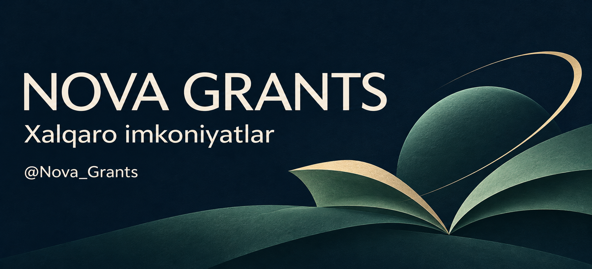

Ko‘rinish namunasi · Telegram klientida shrift va ranglar moslashadi.

Xalqaro ta’lim imkoniyatlari
Dasturlar ro'yxati · 3
01 · Global Flourishing Scholarship (2027)
Birinchi yil kontraktidan £5 000 chegirma
Sussex universitetida magistratura xarajatlarini kamaytirish uchun kontrakt chegirmasi.
Dastur shartlari
Kimlar uchun: Tegishli magistratura kursiga qabul olgan, Overseas fee statusiga ega nomzodlar. Kontrakti boshqa tashkilot tomonidan to‘liq qoplanadiganlar qatnasha olmaydi.
02 · ETH Student Summer Research Fellowship
ETH Zurich yozgi tadqiqot fellowship dasturi. Ushbu kartochka yangi formatni ko‘rsatish uchun berilgan.
Dastur shartlari
Kimlar uchun: Amaldagi fuqarolik, o‘qish bosqichi va muddat talablarini rasmiy sahifada tekshiring.
03 · NUS Amgen Scholars Program
Singapurdagi NUS Amgen dasturi. Kartochka avtomatik saralash natijasi sifatida e’lon qilinmagan.
Dastur shartlari
Kimlar uchun: Tegishli qabul siklining talablarini rasmiy sahifada tekshiring.